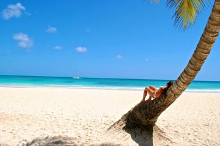

Welcome to our Saona Island Excursion, the ultimate tropical getaway in the Dominican Republic. With crystal clear turquoise waters and white sandy beaches lined with palm trees, Saona Island is a true paradise that has been impressing visitors for over 500 years. On this full-day excursion, you’ll have the opportunity to experience the island’s natural beauty and indulge in a variety of activities such as swimming, and lounging on the beach. You’ll also enjoy a traditional Dominican BBQ lunch served buffet style and have the chance to dance the merengue.
There are several reasons to visit Saona Island when you go to the Dominican Republic. Here are a few: The island's natural beauty: Saona Island is known for its crystal clear turquoise waters and white sandy beaches lined with palm trees. The island is a true tropical paradise.The many activities available: On a Saona Island tour, you can enjoy a variety of activities such as swimming, and lounging on the beach. You can also indulge in a delicious BBQ lunch, dance the merengue, and enjoy the island's natural beauty. The convenience of transportation: Many Saona Island tours include round-trip transportation from Punta Cana, so you don't have to worry about getting to and from the island. The opportunity to experience a local favorite: Saona Island is the #1 demanded excursion in Punta Cana, so you'll be joining locals and other visitors in experiencing the island's beauty and charm
Why you should visit Saona
As mentioned before, Saona Island is a paradise. It’s considered to be a tourist favorite among international visitors to the Dominican Republic. Its beaches have gorgeous white sand along a turquoise sea which makes sit a beauty to view and popular to take photographs. The natural pool is located near the island where tourists love to interact with starfish. It’s also a favorite among families as children have also enjoyed swimming with the starfish. Snorkeling is a fun activity as well. There are so many fun activities to do while you visit Saona Island. You can dance the merengue, visit the Tiki Bar, play volleyball, enjoy lunch at the buffet, swim or walk along the beach. Part of the island’s success is its natural environment that offers a broader view of our mother nature. But without a doubt, enjoying a good meal is one of the “tastiest” reasons to make an excursion to Saona Island. Enjoy a good seafood or typical dishes of Punta Cana is part of the experience on Saona Island. Its shores invite you to relax, enjoy refreshing cocktails on the beach and taste delicious fish or a barbecue for lunch. Saona Island is a beautiful island that many people love to visit. The beaches, water, marine life, native people, and activities there make this a trip for anyone and everyone to enjoy!